Question: between two conditions, do the proportions of cell types change, and where on the embedding are cells gained or lost?
| Function | Use |
|---|---|
summarize_group_meta() |
counts and proportions per group, condition (and sample) |
get_meta_pivot() |
a quick two-way table of two metadata columns |
plot_composition_scatter() |
proportion of each group in one condition against another |
DensityDiffPlot_bioToolkit() |
where on an embedding a condition has more or fewer cells |
These plots describe differences; they do not test them. Cells from one sample are not independent replicates, so tests of composition must use samples (e.g. propeller, scCODA, Milo).
Data: 8,000 PBMCs from Kang et al. 2018, 8 donors, each sampled as control and after 6 h of interferon-β (IFN-β): 16 samples.
pbmc <- docs_kang()Counting cells
summarize_group_meta() counts the cells of each group
per condition (and per sample with sample.by) and their
proportion of the condition’s cells. It takes a Seurat object or its
metadata.
comp <- summarize_group_meta(pbmc, group.by = "cell_type", split.by = "condition")
head(comp)
#> condition group count total prop
#> 1 Control CD4 T 1666 3957 0.42102603
#> 2 Control CD8 T 348 3957 0.08794541
#> 3 Control NK 275 3957 0.06949709
#> 4 Control B 417 3957 0.10538287
#> 5 Control CD14 Mono 907 3957 0.22921405
#> 6 Control FCGR3A Mono 228 3957 0.05761941
per_sample <- summarize_group_meta(
pbmc,
group.by = "cell_type",
split.by = "condition",
sample.by = "donor"
)
head(per_sample, 3)
#> sample condition group count total prop
#> 1 D101 Control CD4 T 85 287 0.29616725
#> 2 D101 Control CD8 T 23 287 0.08013937
#> 3 D101 Control NK 21 287 0.07317073get_meta_pivot() gives a two-way table of any two
columns, as counts or as percentages of rows, columns or the total:
get_meta_pivot(pbmc$cell_type, pbmc$condition, type = "count")
#> # A tibble: 8 × 3
#> row_metadata Control `IFN-beta`
#> <fct> <int> <int>
#> 1 CD4 T 1666 1753
#> 2 CD8 T 348 310
#> 3 NK 275 337
#> 4 B 417 387
#> 5 CD14 Mono 907 859
#> 6 FCGR3A Mono 228 284
#> 7 DC 65 72
#> 8 Megakaryocyte 51 41
get_meta_pivot(
pbmc$cell_type,
pbmc$condition,
type = "percent",
margin = "column"
)
#> # A tibble: 8 × 3
#> row_metadata Control `IFN-beta`
#> <fct> <dbl> <dbl>
#> 1 CD4 T 42.1 43.4
#> 2 CD8 T 8.79 7.67
#> 3 NK 6.95 8.34
#> 4 B 10.5 9.57
#> 5 CD14 Mono 22.9 21.2
#> 6 FCGR3A Mono 5.76 7.02
#> 7 DC 1.64 1.78
#> 8 Megakaryocyte 1.29 1.01Composition scatter
Each group’s proportion in one condition (x) against the other (y), with the y = x line: groups above it are more abundant in the y condition.
plot_composition_scatter(
pbmc,
group.by = "cell_type",
split.by = "condition",
x = "Control",
y = "IFN-beta"
)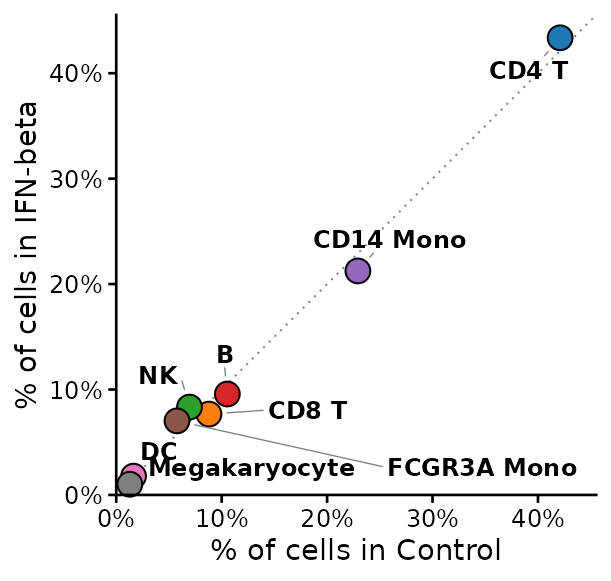
Six hours of IFN-β leave the cell type composition almost unchanged: all cell types lie on the line. The response is a change of state, seen in the expression of interferon-stimulated genes (see Expression across groups).
Variants
Proportions per sample, each point the mean of a condition’s samples,
so that every donor counts the same. The horizontal bar is computed from
the samples of the x condition and the vertical bar from those of the y
condition: error chooses the SEM (default), the SD of the
samples, or a 95% confidence interval of the mean ("ci95",
mean ± t(0.975, n - 1) × SEM, t-based since there are few samples per
condition).
plot_composition_scatter(
pbmc,
group.by = "cell_type",
split.by = "condition",
sample.by = "donor"
)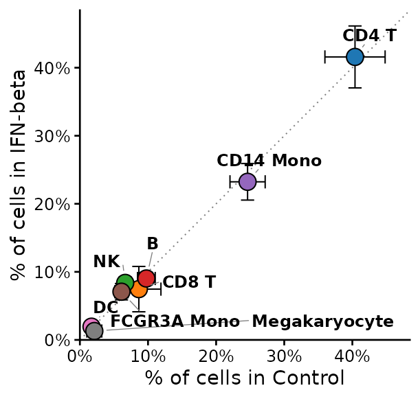
plot_composition_scatter(
pbmc,
group.by = "cell_type",
split.by = "condition",
sample.by = "donor",
error = "ci95",
log = TRUE
)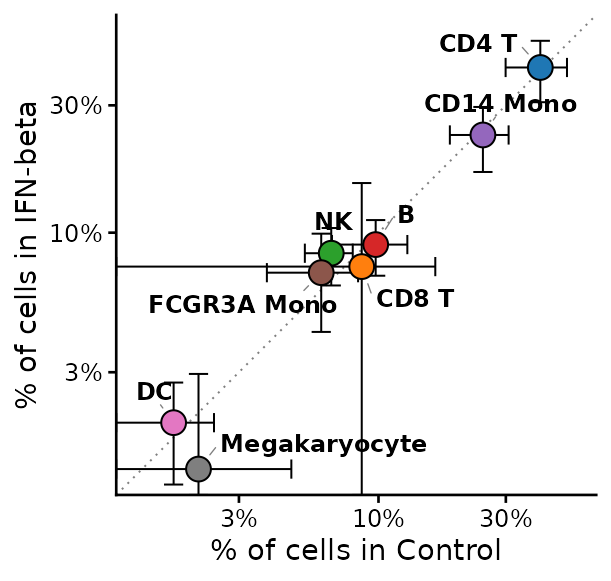
Log axes spread rare groups; fold.lines = 2 draws y = 2x
and y = x / 2:
plot_composition_scatter(
pbmc,
group.by = "cell_type",
split.by = "condition",
log = TRUE,
fold.lines = 2
)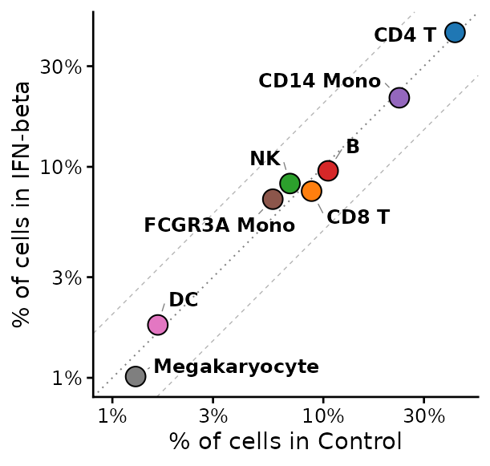
Numbers of cells instead of proportions:
plot_composition_scatter(
pbmc,
group.by = "cell_type",
split.by = "condition",
value = "count",
log = TRUE
)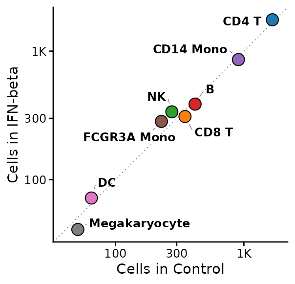
One panel per level of a third column, with proportions computed within each, e.g. within lymphoid and myeloid cells:
is_lymphoid <- pbmc$cell_type %in% c("CD4 T", "CD8 T", "NK", "B")
pbmc$lineage <- factor(
ifelse(is_lymphoid, "Lymphoid", "Myeloid"),
levels = c("Lymphoid", "Myeloid")
)
plot_composition_scatter(
pbmc,
group.by = "cell_type",
split.by = "condition",
facet.by = "lineage",
panel.width = 2.2,
cells = colnames(pbmc)[pbmc$cell_type != "Megakaryocyte"]
)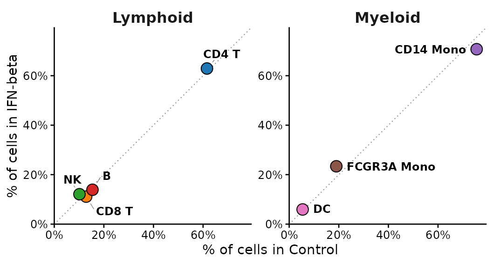
Density difference on the embedding
DensityDiffPlot_bioToolkit() estimates the density of
cells of each condition on the embedding (normalized, so cell numbers do
not matter) and draws the difference from a reference condition: magenta
where the compared condition has relatively more cells, blue where it
has fewer. The colour scale is centred on 0 and each side reaches its
full colour at its own extreme. With sample.by, each
sample’s density is computed separately and averaged, so one large
sample cannot drive the map.
What the map means depends on the embedding. On the integrated UMAP (Harmony over condition), cells of both conditions are aligned by cell type, so the map shows shifts within cell types:
DensityDiffPlot_bioToolkit(
pbmc,
split.by = "condition",
reference = "Control",
sample.by = "sample",
label = TRUE,
label.by = "cell_type"
)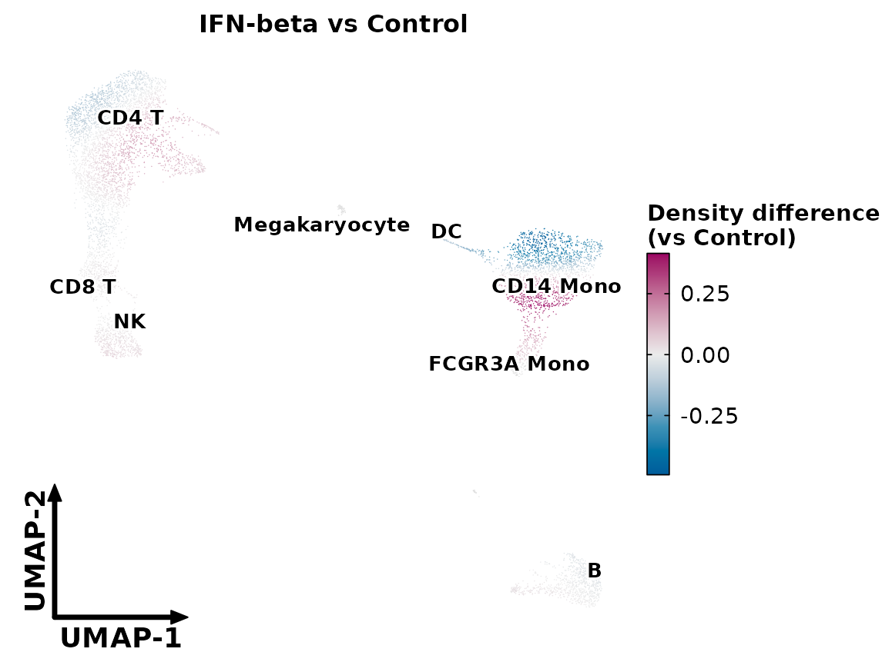
On the UMAP before integration, IFN-β-stimulated cells of every type sit apart from their controls, and the map shows that response as a separation:
DensityDiffPlot_bioToolkit(
pbmc,
split.by = "condition",
reference = "Control",
sample.by = "sample",
reduction = "umap.unintegrated",
label = TRUE,
label.by = "cell_type"
)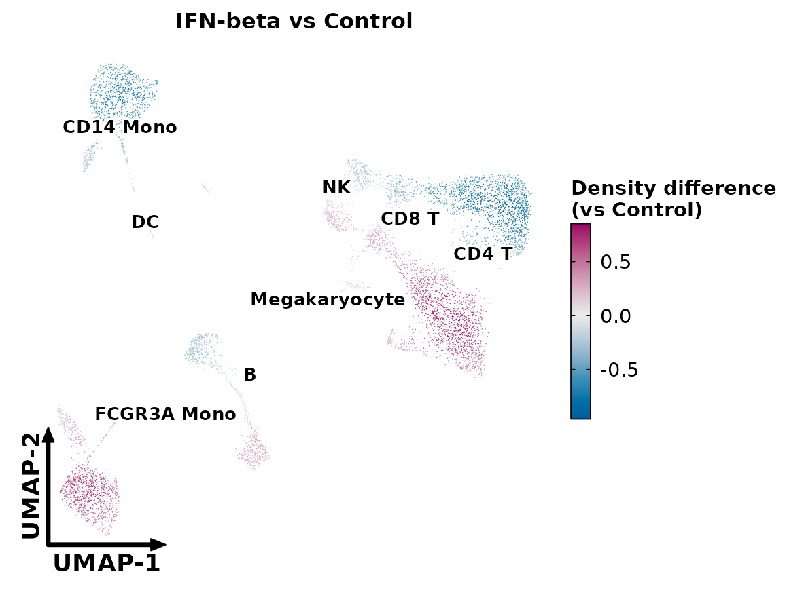
Variants
The log2 ratio of the two densities instead of their difference: fold changes, which also show sparse regions.
DensityDiffPlot_bioToolkit(
pbmc,
split.by = "condition",
reference = "Control",
sample.by = "sample",
measure = "log2ratio"
)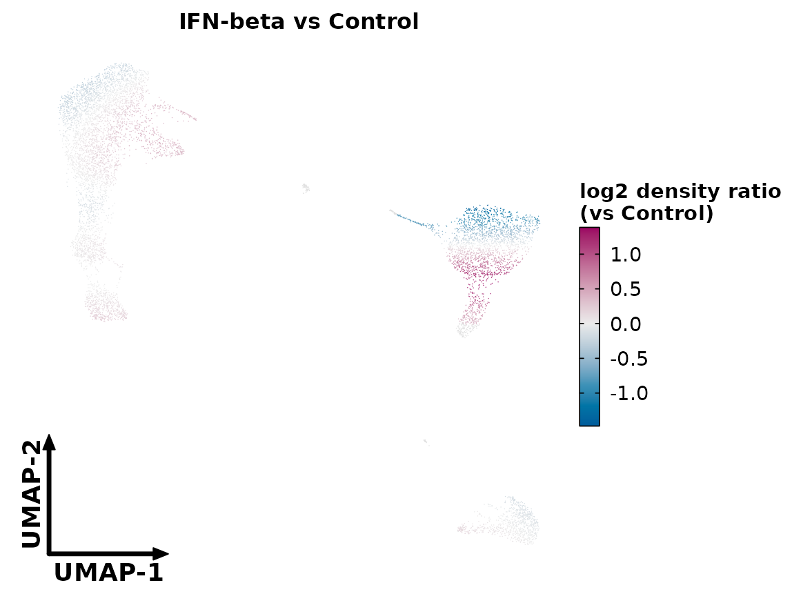
The density difference drawn as a continuous surface, with contours of the density of all cells:
DensityDiffPlot_bioToolkit(
pbmc,
split.by = "condition",
reference = "Control",
sample.by = "sample",
draw = "raster",
contour = TRUE
)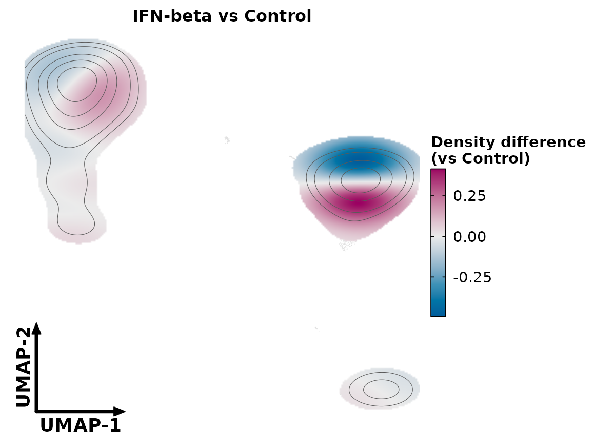
The bandwidth multiplier: below 1 resolves smaller regions, above 1 smooths more.
DensityDiffPlot_bioToolkit(
pbmc,
split.by = "condition",
reference = "Control",
sample.by = "sample",
density.adjust = 0.5
)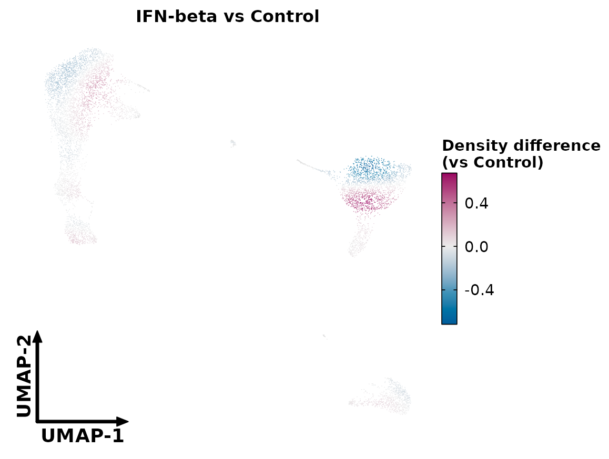